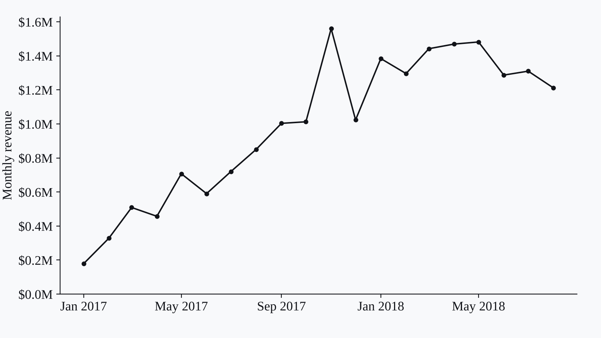
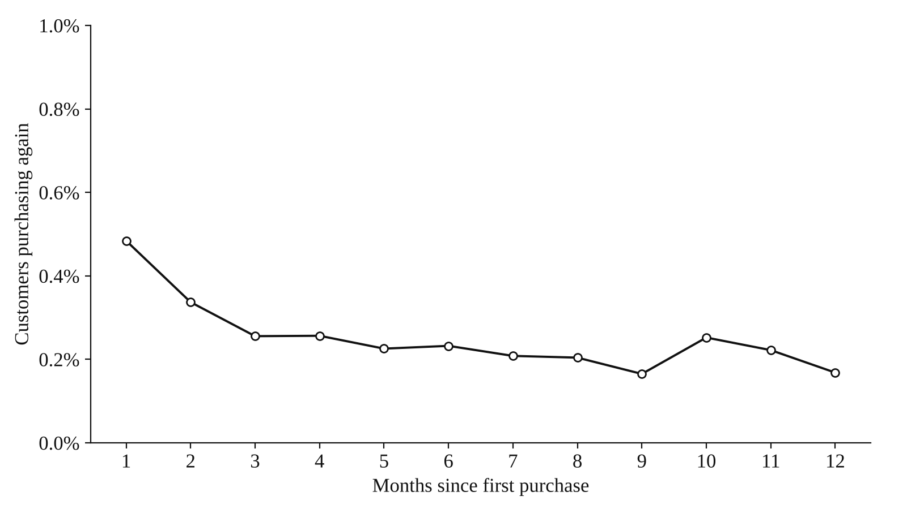

Projects · Customer analytics · Retention · Segmentation
E-commerce Customer Retention Analytics
Customer behavior analysis focused on retention, segmentation, cohort patterns, and churn-risk insights.

Context
I wanted to understand which customers drive the most value and which groups are most at risk of churn.
Data
The Brazilian Olist marketplace dataset: orders, payments, reviews, products, sellers, and customer geography.
Method
I used Python, Pandas, cohort analysis, customer segmentation, and Tableau dashboarding.
Output
Customer-retention dashboards, segmentation tables, and churn-risk insights.
Findings
Across 93,358 customers and $19.9M in revenue, the churn rate was 59.1%. Champions made up only 6.9% of customers while 14.0% were at risk, showing where retention effort should go first.
Reflection
I’d improve this by adding predictive churn models and customer lifetime value estimation.
Figures

